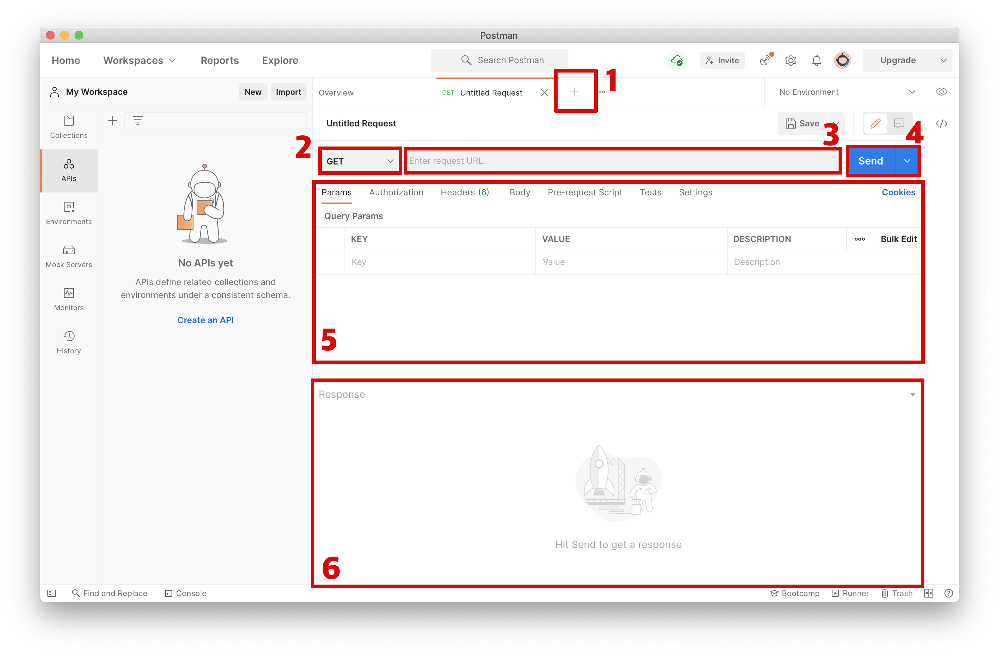
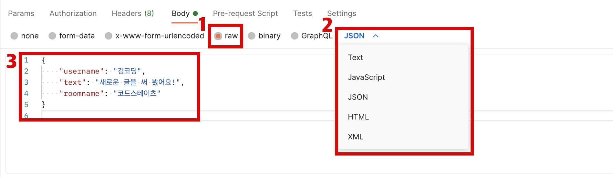

Postman은 API 요청 작성부터 테스트, 문서화 및 공유에 이르기까지 API 개발의 생산성을 높여주는 GUI 플랫폼이다.
Postman을 사용하기 위해 Postman 다운로드 링크에서 다운받아 사용하면 된다.

새로운 탭을 여는 창으로 새로운 탭을 열어 요청/응답을 여러 개 확인할 수 있다.
GET, POST, DELETE 등과 같은 메서드 중 하나를 선택할 수 있다.
URL 입력 창에는 URL과 Endpoint를 입력할 수 있다.
선택한 HTTP 메서드로 입력한 URL로 요청을 보낼 수 있다.
추가적인 파라미터나 요청 본문(body)을 추가할 수 있다.

JSON 형식으로 보낼 때에는 raw를 선택한다.
보낼 형식에 맞게 정확한 타입을 선택한다.
선택한 본문의 형식 타입에 맞게 본문을 입력한다.
요청을 보낸 후 응답을 확인할 수 있는 화면이다.